Q. なんか知りませんが、賛成します？
- 賛成
- どちらかと言えば賛成
- どちらとも言えない
- どちらかと言えば反対
- 反対
のような設問があるとします。別にこれだけでも問題ないと思う方もいれば、「この順序もランダムに逆転させたい」と思う方もいるでしょう。普通考えられる方法としては1つのブロックに2つの設問を入れて、質問文のランダム化をすることだと思います。
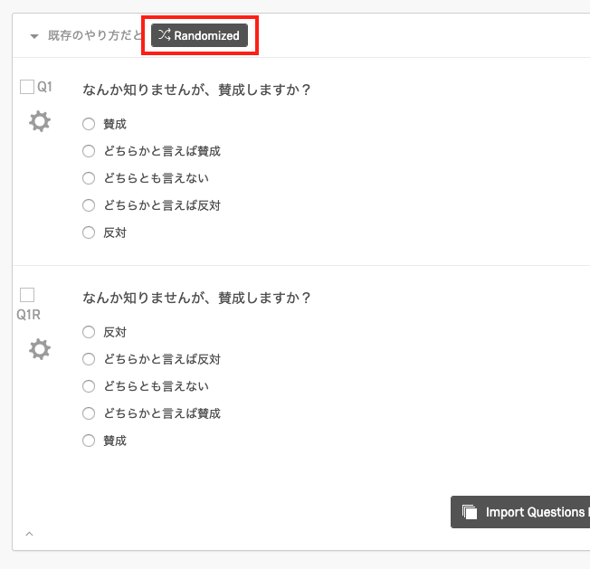
この方式でも全く問題ありませんが、2つ不便なところがあります。それは、
ブロック数が急増し、Survey Flowが操作しづらくなる データクリーニングの際、2つの変数を結合しなければならない 理想としては1つの質問文内で順序のランダム化することでしょうが、Qualtricsでは対応していません。そこでChoice Group機能を利用し、順序逆転のランダム化をやってみました。
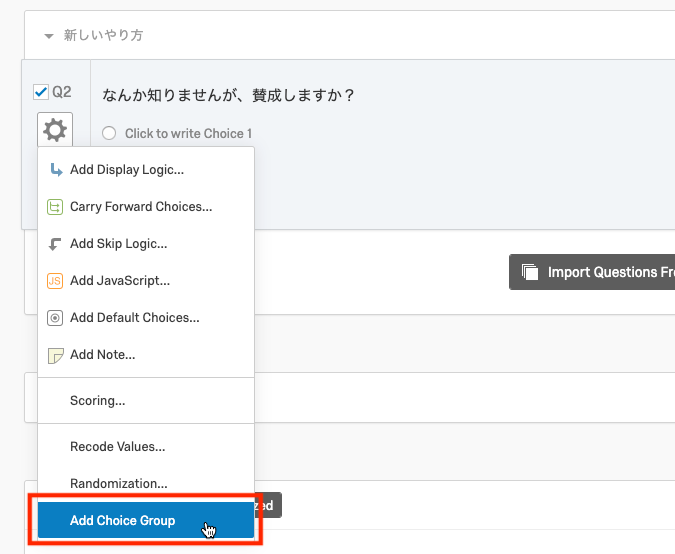
まず質問文を入力し、「Add Choice Group」をクリックします。
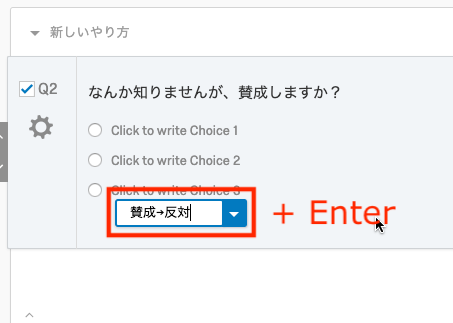
適当にグループ名を入力します。ここでは「賛成→反対」と名付けました。
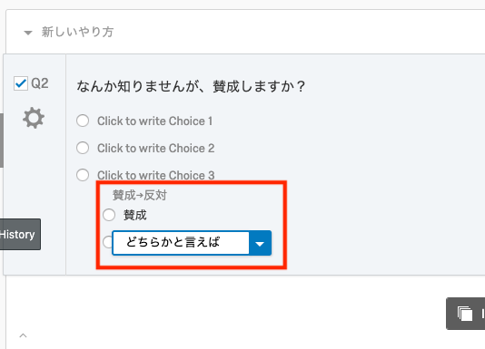
入力後に「Entrer」キーを押し、選択肢を入力します。
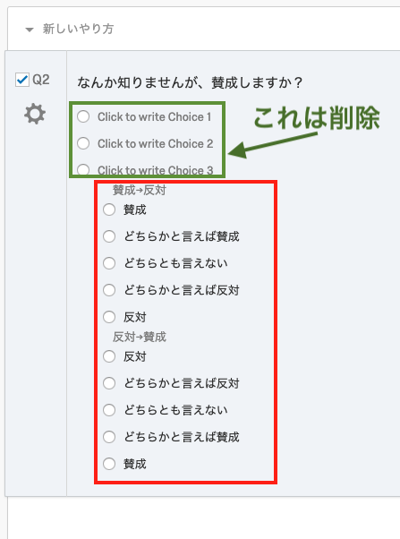
入力が終わったら、「反対→賛成」グループを作成し、今回は逆の順番で選択肢を入力します。事前に消しておくべきでしたが、デフォルトの選択肢も削除します。

もし、選択肢のグループ割当にミスした場合は、「Assign To Group」で再割り当てが可能です。
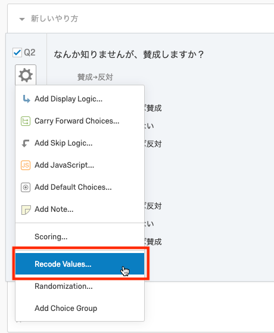
「Recode Values」をクリックします。
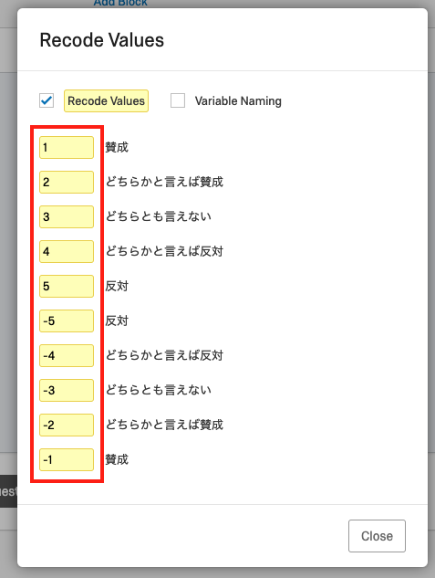
ここでは{1, 2, 3, 4, 5, -5, -4, -3, -2, -1}にしました。{1, 2, 3, 4, 5, 5, 4, 3, 2, 1}にすることも可能ですが、順番によって分布の変化が見たい場合はこれが良いでしょう。クリーニングの際にも値の絶対値を取るだけなので簡単です。
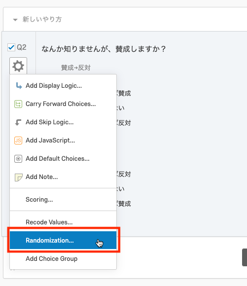
「Randomization…」をクリックし、
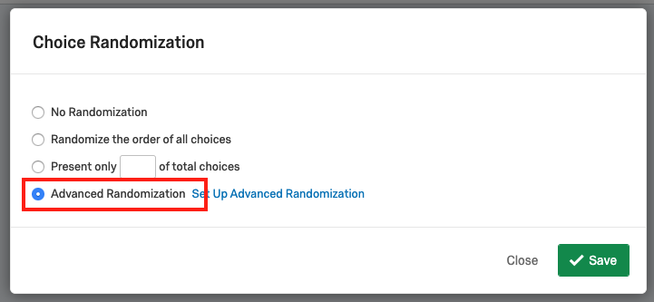
「Advanced Randomization」を選択します。
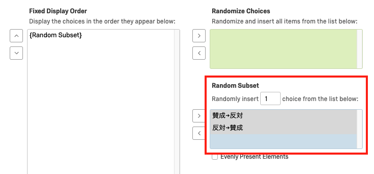
左側は個々の選択肢ではなく、グループ名が表示されます。これらを右側の「Random Subset」へ移動させ、1つのグループだけ表示させるように設定します。
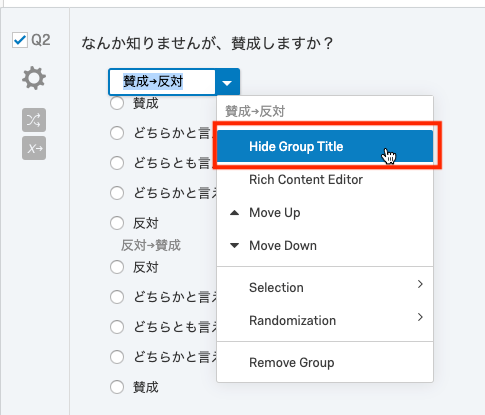
最後にグループ名を選択し、「Hide Group Title」をクリックしてグループ名を消します。復活させるときには、そのグループの属する選択肢をクリックして「Parent Group Options」から「Hide Group Title」のチェックを解除します。
これでおわりです！うまく機能するかPreviewから確認してみましょう。

おまけですが、「DK/NA」を固定したい場合は、グループに予めDK/NAを入れておく方法以外にも、以下のような方法も可能です。